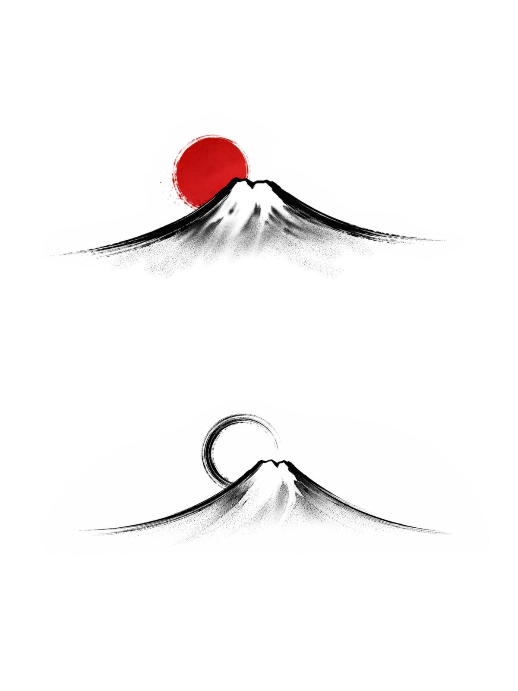
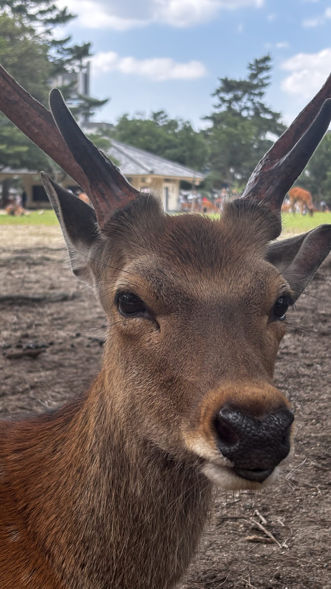
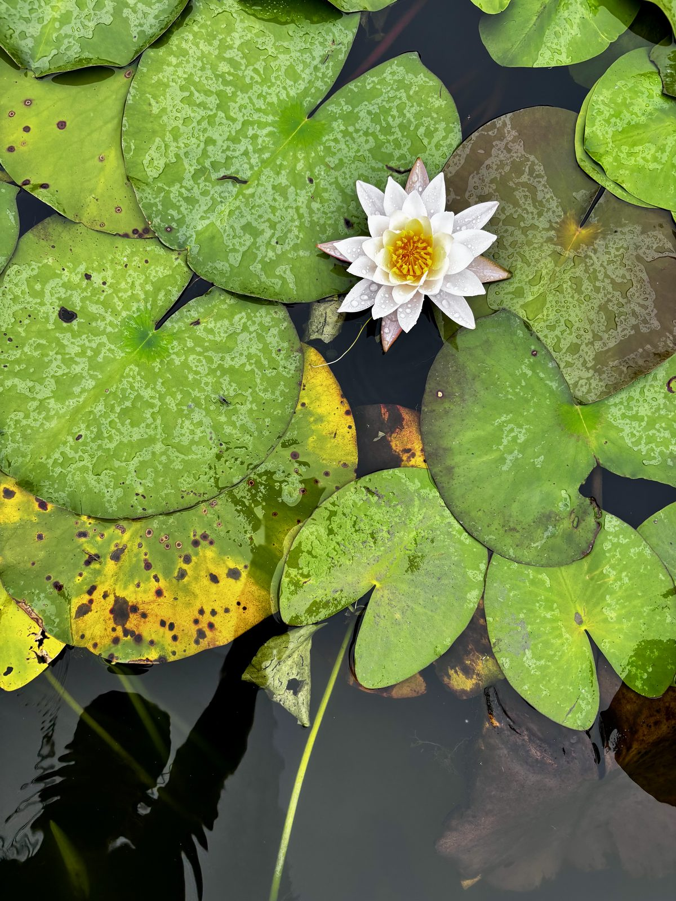
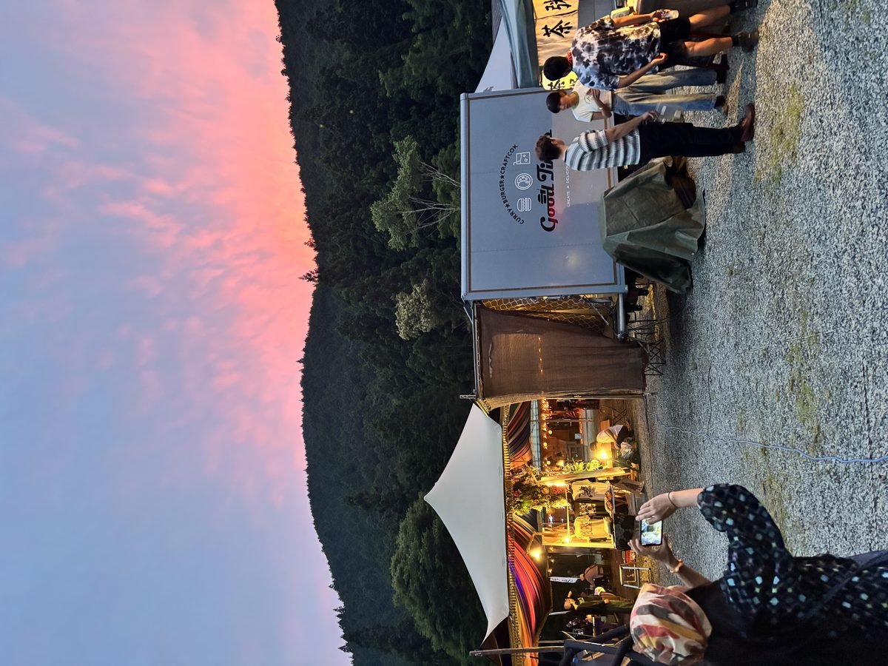
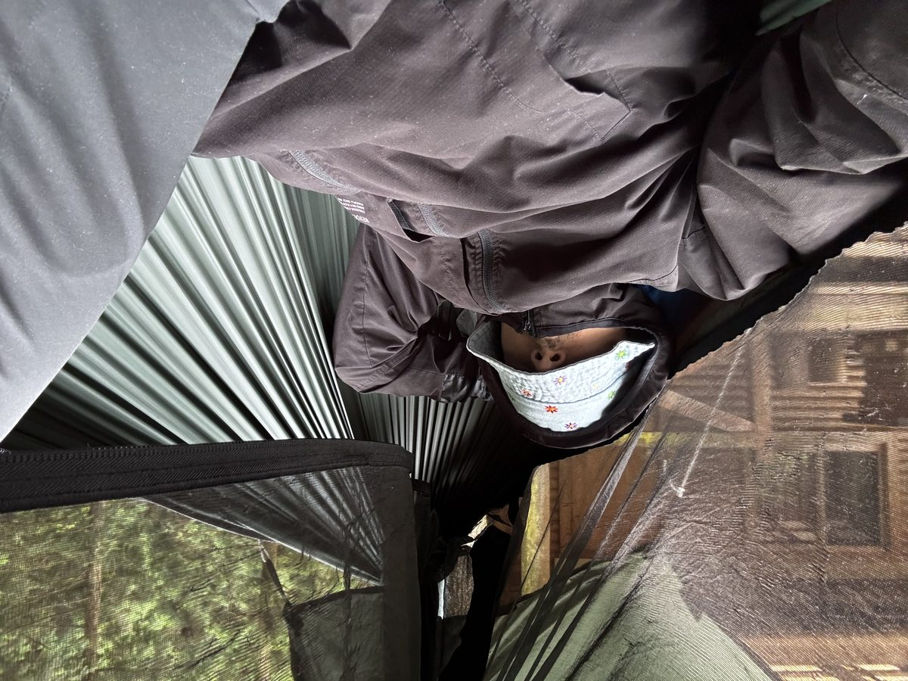

Giappone
Data: 2026-06-13 / 2026-07-14
Luogo: Tokyo → Fuji → Kyoto → Kobe → Naoshima → Shikoku (Henro) → Osaka → Ishigaki/Okinawa → Tokyo

Rotta
Tokyo (arrivo Haneda) → Fujino (permacultura) → campeggio Monte Fuji (&GREEN, 2 notti) → Kyoto → Nara (permacultura + Monte Miwa) → Himeji → Kobe → Okayama → Naoshima (arte Tadao Ando) → Shikoku, Henro (Tokushima, Kotohira) → Osaka → festival → Ishigaki/Iriomote (Okinawa) → Tokyo → partenza.



Zaino e sistema notte
Amaca + tarp + sacco a pelo 10°C, montabile anche a terra quando gli alberi non erano adatti (utile al camp del Fuji, non specializzato in amaca). Cuscino gonfiabile + sacco vestiti come cuscino: entrambi portati, funzionanti.
Zanzariera indispensabile in tsuyu — zanzare aggressive e rischio mukade nelle zone boscose. Tarp teso basso per gestire condensa da umidità 80-90%.

Cose che sono andate bene
- Zaino piccolo + lavanderia ogni 4-5 giorni: disciplina che ha retto per un mese
- Comprare l'abbigliamento tecnico sul posto (Uniqlo, GU) invece di riempire lo zaino da casa
- eSIM locale per i dati + SIM italiana solo per OTP/SMS: nessun problema di roaming
- Asics Gel Wide extra wide, presa a Kyoto (¥9.000): risolto il problema ginocchio (varismo, serve suola morbida + flessibile, mai rigida tipo Vans/approach shoe)
- Treni + auto a noleggio solo per la tratta Fuji: molto più economico e veloce di un'auto unica Tokyo-Kyoto (penale one-way + parcheggi città l'avrebbero reso il doppio del costo)
- Naoshima spostata prima del Henro invece che dopo: ha evitato uno zigzag inutile sulla rotta
- Contattare il campeggio via email in anticipo: hanno aperto apposta un giorno di chiusura per noi e lasciato il campo libero
Cose che non rifarei
- Scarpe con suola rigida (tipo approach shoe) per camminate lunghe: hanno causato dolore al ginocchio per assenza di cushioning adattivo
Cose che porterei sicuramente
- Amaca + tarp + zanzariera, con opzione di montaggio a terra
- Asciugamano microfibra in tasca esterna (mai chiuso bagnato dentro lo zaino)
- Cuscino gonfiabile compatto
- Powerbank piccolo + eSIM attivata prima di partire
- Scarpe neutre, flessibili, ammortizzate — mai a suola rigida, mai stability/motion control
Cose da aggiungere o valutare la prossima volta
- Insola ortopedica su misura prima di partire (fatta a mano da un professionista, non semi-custom comprata sul posto)
- Repellente locale acquistato appena arrivati invece che portato da casa
- Pianificare i giorni di henro con più margine: le tratte tra i templi (specialmente Kochi) hanno pochi konbini, serve scorta d'acqua
Nota generale
In estate giapponese (giugno-luglio, tsuyu + caldo umido) sono da preferire: capi quick-dry o merino (mai cotone puro, non asciuga), pantaloni lunghi leggeri per zanzare e sole, ombrello comprato sul posto, e disciplina di lavanderia frequente piuttosto che portare troppi ricambi.
Note pratiche sul paese
Konbini
Family Mart, Seven-Eleven e Lawson sono aperti 24/7, ovunque — anche in paese piccolo. Hanno cibo caldo, acqua, kit igiene completi, medicine di base, adattatori, buste, snack, pranzi pronti. Punto di riferimento per qualsiasi necessità logistica, a qualsiasi ora.
Amenities in hotel e ostelli
La maggior parte delle strutture — anche quelle economiche — fornisce: spazzolino, dentifricio, ciabatte, cotton fioc, sapone, shampoo, balsamo, rasoio. Non serve portare quasi nulla da casa per l'igiene: si compra o si trova sul posto senza sforzo.
Acqua
Potabile ovunque, dal rubinetto e dalle fontanelle pubbliche. Il filtro acqua è inutile.
Città
Kyoto è la più bella e comoda da vivere: gestibile, a misura d'uomo, bellissima. Tokyo e Osaka sono caotiche ma vivibili anche a lungo. Osaka meno — preferenza personale.
Checklist bagaglio (zaino piccolo)
- Amaca + tarp + zanzariera + cordini
- Sacco a pelo 10°C
- Cuscino gonfiabile
- Pali da trekking collassabili
- 3 set vestiti (1 addosso, 2 nello zaino), materiali quick-dry/merino
- Giacca impermeabile leggera
- Asciugamano microfibra (tasca esterna)
- Sandali/scarpe leggere città
- Scarpe principali: neutre, flessibili, ammortizzate
- Laptop + power bank + cavi
- Kit primo soccorso minimal + cerotti blister
- IDP + patente + passaporto + copie digitali
- 2 carte (Visa + Master) + contante yen
- eSIM attivata prima della partenza
Contatti e prenotazioni chiave
- Campeggio &GREEN Fuji: contattato via email in anticipo, disponibilità confermata anche in giorno di chiusura
- Naoshima (Chichu + Benesse House): prenotazione online obbligatoria, fatta con ~1 mese di anticipo
- Permacultura Fujino e Nara: contattati via form/Workaway prima della partenza